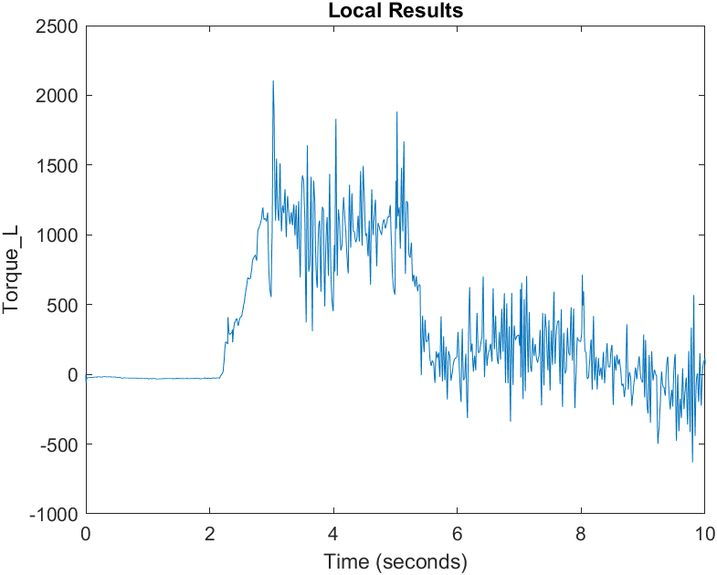
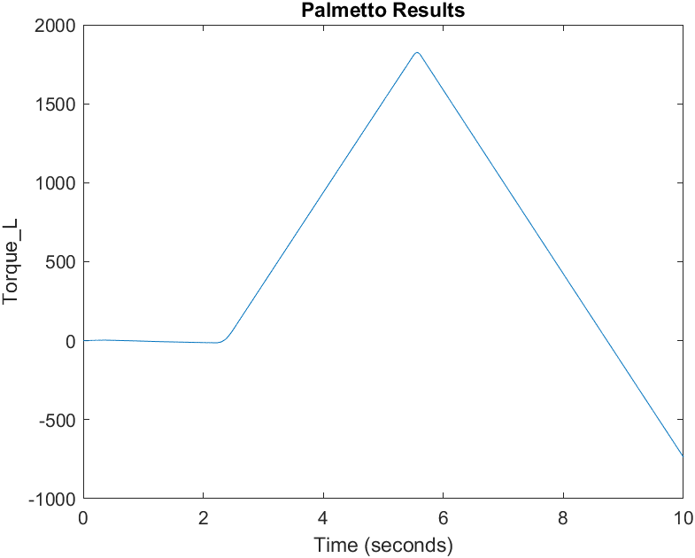

Stephen Wright
August 2025
DRAFT
It's pretty cool
It's pretty cool


Example of directory setup
Git repo
├── README.md
├── simulink_models
│ ├── base_accel_model.slx
├── source
│ ├── calibration
│ │ └── genetic_algorithm
│ │ ├── run_simulation.m
│ │ ├── simulations
│ │ │ └── accel
│ │ │ └── 1
│ │ │ └── copy_of_accel_model.slx